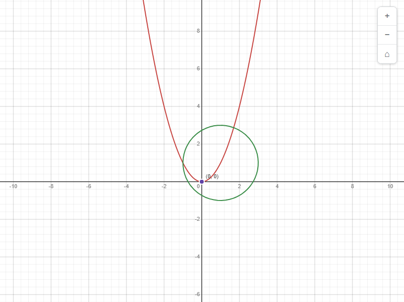
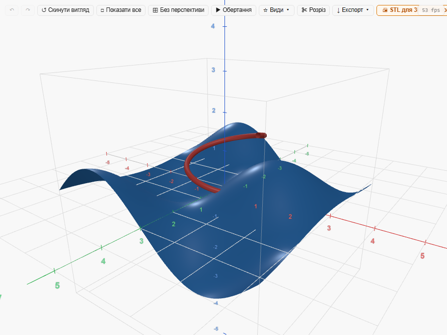
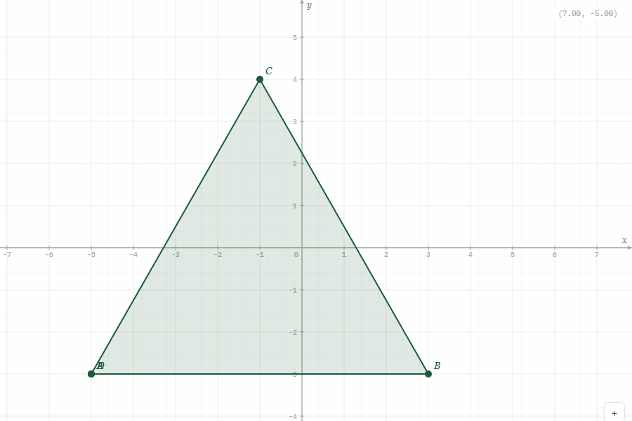
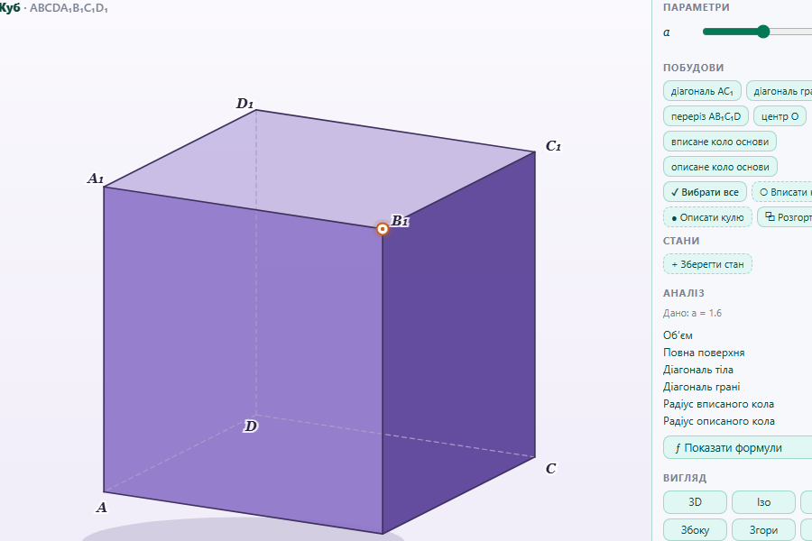

Інструменти для математики
Покажіть математику в русі.
Графіки, геометричні побудови й просторові фігури — оберіть те, що потрібно зараз.
Що хочете дослідити?
Відкривається у браузері

Графіки на площині
Функції, рівняння й графіки, які можна змінювати наживо.

Графіки в просторі
Поверхні й криві в просторі: обертайте та розглядайте з різних боків.

Геометричні побудови
Будуйте фігури на площині й рухайте їхні точки.

Просторові фігури
Обертайте фігури, розглядайте перерізи й побудови.